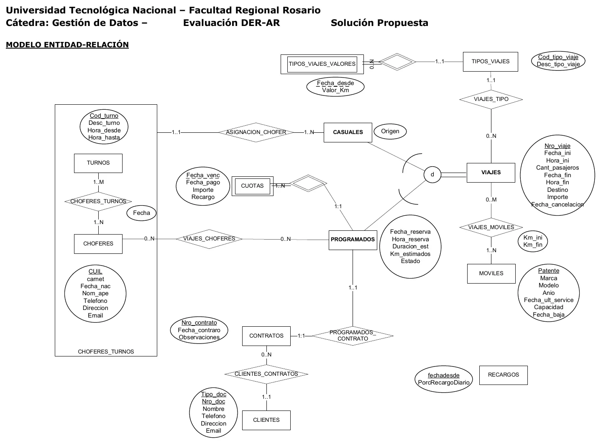
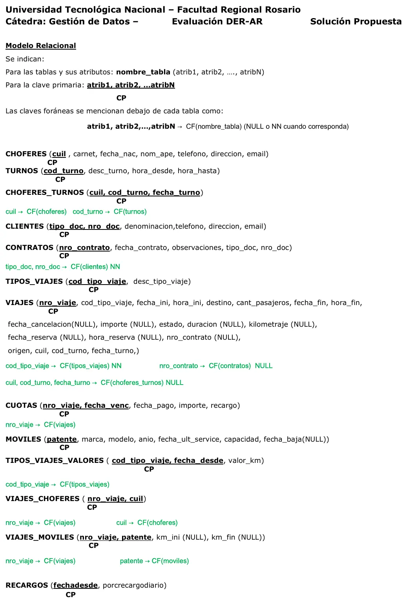

Manolo Carpa Tigre
Final
Enunciado
Evaluación de Modelos de Datos y Algebra Relacional
Modelos de Datos
- a) Esquematice el modelo E-R que se deriva de la narrativa.
- b) Transforme el modelo E-R en un Modelo Relacional (pasaje a tablas). Especifique atributos, si los mismos admiten valores nulos, claves primarias y foráneas y de estas últimas si admiten o no valores nulos.
Operaciones del Álgebra Relacional
- c) Desarrolle las operaciones en Algebra relacional de los Requerimientos planteados.
La empresa Manolo Carpa Tigre (MCT) se dedica a realizar viajes. El proceso general para la realización de un viaje es el siguiente:
Los viajes1 deben registrarse en el momento en que son solicitados y se clasifican por tipo de viaje4. Esta clasificación permite conocer el valor del kilometraje del tipo del viaje5.
A cada viaje se le asignan el/los móviles6 en el/los cual/es se realizará el viaje. Cuando finaliza el viaje se registran el kilometraje inicial y el kilometraje final que tenía el móvil al realizar el viaje.
Los viajes además pueden ser programados2 o casuales3. En función de esto la empresa realiza diferentes procedimientos:
Viajes Programados
Los viajes programados2 se reservan y pueden cancelarse hasta 3 días antes de su fecha de inicio. En el momento de la reserva se consulta si existe disponibilidad de choferes7 para realizar el viaje programado y se los asigna al mismo.
Para cada viaje programado se realiza un único contrato8 con el cliente9.
El importe calculado de los viajes programados se abona en cuotas10(1 o varias).
Viajes Casuales
Los viajes casuales3 se solicitan para el día, no pueden reservarse con anticipación. Para poder brindar este servicio la empresa ha establecido un sistema de turnos12. En el momento de la solicitud de un viaje casual se asigna el chofer de un turno vigente.
Reglas
- Los viajes se identifican con un número de viaje que es secuencial y se registran la fecha de inicio, hora de inicio, fecha de fin, hora de fin, cantidad de pasajeros, un texto donde se especifica el destino, importe del viaje y un estado que puede asumir los valores: pendiente, en proceso, cancelado y terminado. La fecha de fin y hora de fin de viaje se registran cuando el viaje finaliza, si se cancela no se registran. Si el viaje fuera cancelado se registra la fecha de cancelación.
- Para los viajes programados se registra, además: fecha de reserva, hora de reserva, duración y kilometraje estimados. El importe del viaje se calcula en función del valor por km para el tipo de viaje y los kilómetros estimados del viaje en el momento de la reserva y se registra. No se cobra excedente si al realizar el viaje se excede el kilometraje estimado.
- Para los viajes casuales se registra, además, la dirección de origen del viaje. Finalizado el viaje se calcula el importe del viaje según los kilómetros recorridos y se registran el kilometraje y el importe del viaje.
- Los tipos de viajes están codificados y tienen una descripción. Ej: 1-Urbanos, 2-Media distancia, etc.
- Los tipos de viaje tienen un valor por km que se actualiza periódicamente.
- Los móviles se identifican por la patente y se conoce: Marca, modelo, año de fabricación, fecha de la último service, capacidad. Cuando los vehículos no se utilizan más o se venden se debe registrar la fecha de baja.
- Los choferes se identifican por su CUIL y de ellos se registra: nro. carnet de conductor, fecha de nacimiento, nombre y apellido, teléfono, dirección y cuenta de email.
- Los contratos se identifican con un número único y secuencial. Además del cliente que firma el contrato debe registrarse la fecha del contrato y posiblemente alguna observación que el cliente quiera indicar.
- Los clientes se identifican por un tipo de documento y un número de documento y deben registrarse nombre, teléfono, dirección y cuenta de email.
- Las cuotas se establecen para pagar cada uno de los viajes programados. De cada cuota se debe registrar la fecha de vencimiento, importe y, cuando la cuota sea abonada, la fecha de pago y, si se abona fuera de término (cuota en mora) el importe de recargo cobrado en función de los días de mora por el porcentaje de recargo diario11 vigente a la fecha de pago aplicado al importe de la cuota.
- La empresa define el porcentaje de recargo diario que se aplicará sobre las cuotas abonadas fuera de término. Se mantiene un histórico de los mismos.
- Los turnos se identifican por un código y tienen descripción, hora desde y hora hasta. Cada chofer puede realizar a partir de una fecha uno o más turnos y en un turno podrán trabajar a partir de una fecha uno o más choferes.
Requerimientos
- Cuando un móvil se descompone es necesario reprogramar sus viajes. Por lo tanto, dado un móvil (APB 333) listar todos los futuros viajes no cancelados del mismo, indicando Nro. de viaje, fecha y hora de inicio y cantidad de pasajeros.
- Listar los choferes que han compartido la planificación de turnos con el chofer “Jose Lópes”.
Ejecute el script de base de datos proporcionado por la cátedra Todas las operaciones siguientes deben copiarse a un archivo que será entregado una vez completado el examen.
El nombre del archivo deberá tener la forma: APELLIDO_NOMBRE.sql
DDL
- (Evaluación: Esta consigna es eliminatoria). Desarrolle las sentencias DDL requeridas para completar la definición de las tablas CHOFERES_TURNOS y VIAJES
DML
- Ranking de móviles. Indicar: Patente, cantidad de kilómetros recorridos en todos los viajes que realizó el móvil. Ordenar por cantidad de kilómetros recorridos en forma descendente.
- Lista de precios. Indicar código del tipo de viaje, descripción y valor actual. Si el tipo de viaje aún no tiene ningún precio registrado, mostrar igual el tipo de viaje indicando esta situación.
- Importes adeudados: Listar los clientes que adeudan cuotas indicando: tipo y nro. de documento, nombre, teléfono, cantidad de cuotas vencidas, importe total adeudado e importe total de recargo al día de hoy.
Recordar que las cuotas vencidas tienen un importe de recargo que se calcula: Recargo = cantidad de días de mora * porcentaje de recargo vigente * importe de la cuota / 100.
Cantidad de días de mora = fecha actual – fecha vencimiento (Función DATEDIFF)
- Disponibilidad de móviles: realizar un procedimiento almacenado que analice la disponibilidad de móviles con una cierta capacidad o más (parámetro de entrada) para realizar un viaje casual. El procedimiento deberá listar Patente y capacidad de los móviles disponibles.
Probar el procedimiento para la capacidad: 20
TCL
- Actualización de precios: Debido a un aumento en los combustibles la empresa ha decidido un aumento de precios para el valor por km de los tipos de viajes. El aumento regirá a partir del lunes próximo. El aumento será de un 25% a los que tengan un importe menor a $100 y de 30% a los que tengan un importe mayor o igual a $100.
Resolución
Ver la resolución: DER, pasaje a tablas y SQL
Son las hojas originales. Tocá una para verla en grande.




SQL
/* SQL 1*/
select vm.patente, sum(vm.km_fin - vm.km_ini) kms
from viajes_moviles vm
group by vm.patente
order by kms desc;
/* SQL 2*/
drop temporary table if exists val_act;
create temporary table val_act
(
select cod_tipo_viaje, max(fecha_desde) fec_val
from tipos_viajes_valores
where fecha_desde <= current_date
group by cod_tipo_viaje
);
select tv.desc_tipo_viaje, vv.valor_km
from tipos_viajes tv
left join val_act tt
on tt.cod_tipo_viaje=tv.cod_tipo_viaje
left join tipos_viajes_valores vv
on vv.cod_tipo_viaje=tt.cod_tipo_viaje
and vv.fecha_desde=tt.fec_val;
/* SQL 3*/
select r.PorcRecargoDiario INTO @recargo
FROM recargos r
WHERE r.FechaDesde = (select max(r1.fechadesde) FROM recargos r1);
select @recargo;
SELECT cli.tipo_doc, cli.nro_doc, cli.denominacion, cli.telefono,
SUM(cu.importe) Importe ,
SUM(ROUND(@recargo * (datediff(current_date(), cu.fecha_venc)) * cu.importe / 100,2)) Recargo
from cuotas cu
INNER JOIN viajes v
ON v.nro_viaje = cu.nro_viaje
INNER JOIN contratos co
ON co.nro_contrato = v.nro_contrato
INNER JOIN clientes cli
ON cli.tipo_doc = co.tipo_doc
AND cli.nro_doc = co.nro_doc
WHERE cu.fecha_pago is null AND cu.fecha_venc < current_date()
GROUP BY 1,2,3,4;
/* SQL 5*/
USE `manolo_carpa_tigre`;
DROP procedure IF EXISTS `sp_moviles_disp`;
DELIMITER $$
USE `manolo_carpa_tigre`$$
CREATE PROCEDURE `sp_moviles_disp` (in wcapacidad INT)
BEGIN
select m.patente, m.capacidad
from moviles m
where m.fecha_baja is null
AND m.patente not in
( select vm.patente
from viajes v
inner join viajes_moviles vm
on v.nro_viaje=vm.nro_viaje
where v.fecha_cancelacion is null
AND v.estado = 'En Proceso'
OR (v.fecha_ini = curdate()
and v.estado = 'Pendiente'))
And m.capacidad >= wcapacidad;
END$$
DELIMITER ;
CALL sp_moviles_disp(20);
/* SQL 6*/
START transaction;
drop temporary table if exists val_act;
create temporary table val_act
(
select cod_tipo_viaje, max(fecha_desde) fec_val
from tipos_viajes_valores
where fecha_desde <= current_date
group by cod_tipo_viaje
);
INSERT INTO tipos_viajes_valores
SELECT tvc.cod_tipo_viaje, '2018-07-09', tvc.valor_km * 1.30
from tipos_viajes_valores tvc
INNER JOIN val_act va
ON va.cod_tipo_viaje = tvc.cod_tipo_viaje
AND va.fec_val = tvc.fecha_desde
WHERE tvc.valor_km >= 100;
INSERT INTO tipos_viajes_valores
SELECT tvc.cod_tipo_viaje, '2018-07-09',tvc.valor_km * 1.25
from tipos_viajes_valores tvc
INNER JOIN val_act va
ON va.cod_tipo_viaje = tvc.cod_tipo_viaje
AND va.fec_val = tvc.fecha_desde
WHERE tvc.valor_km < 100;
commit;¿Cómo te fue?
Marcá cada tema del examen.
- DERDe la narrativa al DER, en 1° parcial
- PasajePasaje a tablas, en 1° parcial
- ÁlgebraÁlgebra relacional, en 1° parcial
- SQLSQL para la práctica, en 2° parcial